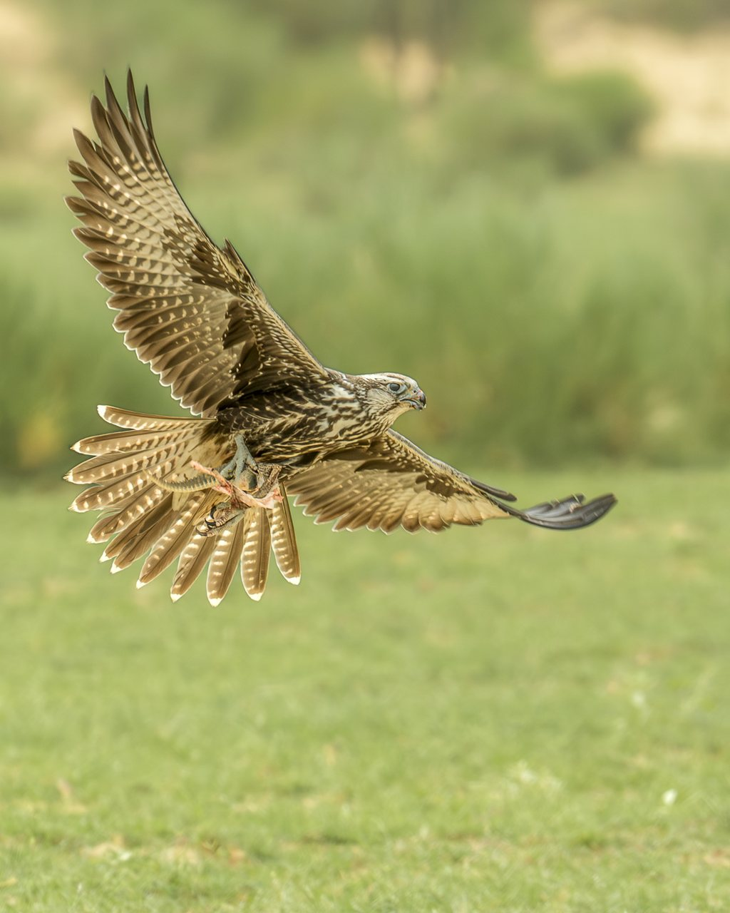

Wildlife filmmaking & cinematography
Short and long-form factual films rooted in field behavior, habitat context, and ethical practice.
Naturalist • Wildlife Filmmaker • Field Storyteller
I am Vinay Chittora of Cane & Camera. My work combines wildlife cinematography, ecological observation, and on-ground storytelling across Mukundara Hills Tiger Reserve (MHTR), surrounding forest edges, grasslands, wetlands, and desert landscapes.
Short and long-form factual films rooted in field behavior, habitat context, and ethical practice.
Location intelligence, seasonal understanding, and practical support for crews working in Rajasthan and MHTR-linked landscapes.
Visual narratives that help audiences understand biodiversity networks, habitat stress, and restoration priorities.
This work is grounded in long-term observation of how grasslands, wetlands, scrub, forest edges, insects, reptiles, birds, raptors, and mammals interact. Conservation is strongest when biodiversity is treated as a system—not a trophy list.

Courtship displays of the Great Indian Bustard in Rajasthan’s Thar Desert, with field context on grassland conservation and local stewardship.

The Red-breasted Flycatcher weighs barely 10 grams, yet crosses continents to winter in Mukundara Hills and the Aravalli belt—an indicator of fragile habitat links.

A field documentary following a desert fox family as they navigate heat, predators, and survival pressures in India’s arid landscapes.

Laggar Falcon (Falco jugger) perched in Rajasthan grasslands—an intimate raptor portrait from Cane & Camera’s wildlife photography.

Critically Endangered Great Indian Bustard in the arid plains of Rajasthan—a rare, respectful encounter captured by Cane & Camera.

A majestic Saker Falcon (Falco cherrug), a scarce winter migrant to India—documented with patience in open desert habitat.

A low-angle glimpse of the Bengal Monitor (Varanus bengalensis)—textured scales and earth tones in natural cover.
Available for wildlife filming, cinematography support, field scouting, story development, conservation campaigns, and natural history documentation assignments.